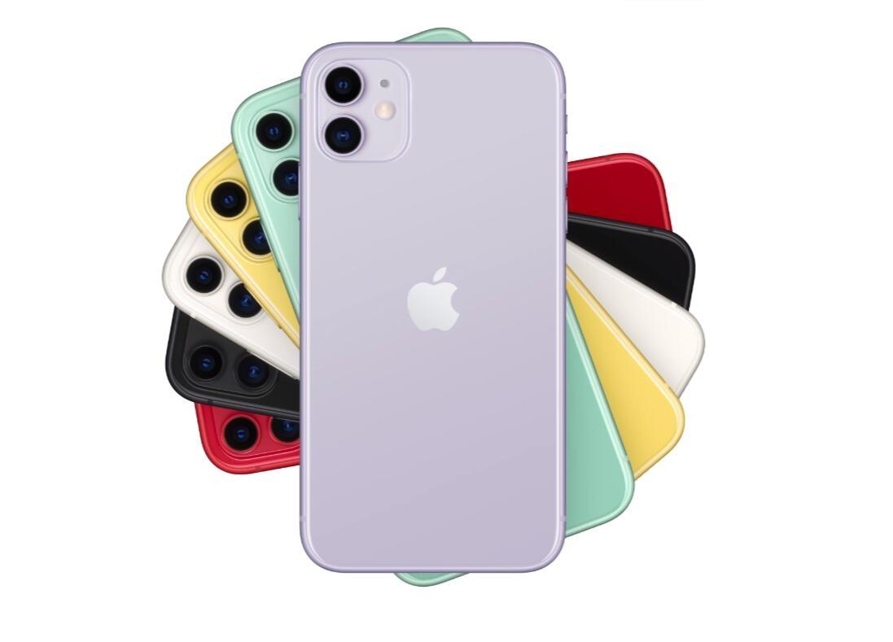
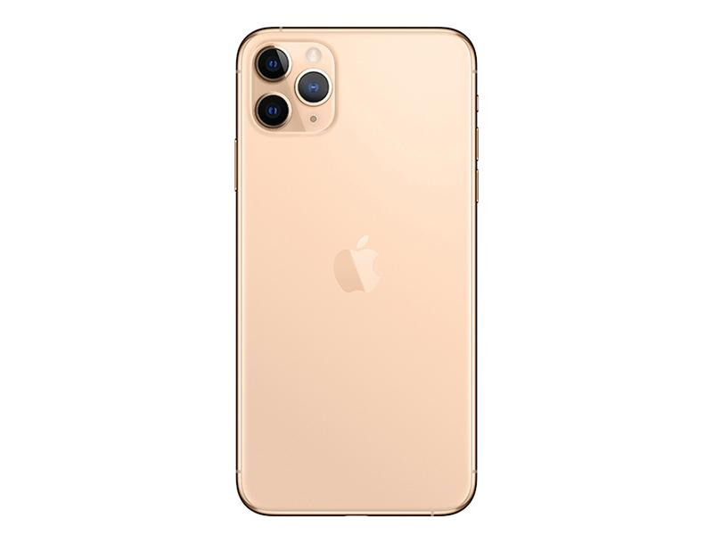

he iPhone 11 uses a rear dual camera, with six colors of purple, white, green, yellow, black and red; width: 75.7mm, height: 150.9mm, thickness: 8.3mm, weight: 194g; aluminum frame with front and rear glass panels. The iPhone 11 uses a 6.1-inch LCD screen, which can adjust the white balance to match the color temperature of the ambient light; it supports light click or lift to wake up; it can use the context menu and shortcut commands to handle various daily affairs; it supports Dolby panoramic sound. 
The iPhone 11 Pro is Apple's first mobile phone named pro in the United States. It adopts a rear three camera design and has four colors: dark night green, dark sky gray, silver white and gold. It comes in two sizes: iPhone 11 pro and iPhone 11 Pro max. both support IP68 waterproof and dustproof, and are equipped with 18W charging head as standard. At 1:00 a.m. Beijing time on September 11, 2019, the iPhone 11 Pro will be released at Apple's new product launch in the autumn of 2019, with prices starting from 8699. 